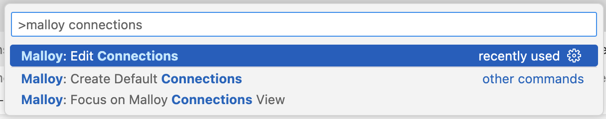

Installing the Malloy Extension
Installing the Malloy Extension

Currently, BigQuery, PostgreSQL, and DuckDB are supported. These instructions assume you have already installed the Malloy Extension in VSCode.
Adding the Connection in VS Code
NOTE: DuckDB is natively supported, allowing you to skip these initial steps.
Open the VS Code Command Palette (cmd+shift+p on Mac, or ctrl+shift+p on Windows), and type "malloy connections". Click on the "Malloy: Edit Connections" option that appears. This will take you to the Connection Manager page.

Click "New Connection" and fill out the relevant details. See below for database-specific instructions.
Press "Test" on the connection to confirm that you have successfully connected to the database
Hit "Save," then dive into writing Malloy! We recommend starting with one of our Samples, which can be found here
If you've given your connection a name, that name must be used when referencing a table in your database. If you have not named your connection, the default name bigquery, duckdb, md, snowflake, trinoe or postgres, depending on which database you're connecting to; e.g., bigquery.table('project-id.dataset-id.tablename').
DuckDB Parquet and CSV Files (via DuckDB)
Parquet and CSV files are queryable via DuckDB is available without needing to explicitly configure a connection. Local files can be referenced in a source. This example has the CSV in the same directory as the .malloy model file: source: baby_names is duckdb.table('babynames.csv') The default name of a DuckDB connection is duckdb.
DuckDB also can run in browser only mode. For example.
Install the Malloy extension
Open any of the Malloy files and run queries.
You can also specify a DuckDB database by configuring the or adding a DuckDB connection.
MotherDuck
Motherduck is configured simply through a token. In motherduck click on 'settings' then copy token. The token can be set in your environment
export set MOTHERDUCK_TOKEN=....
Then launch vscode. For example:
source: hacker_news is md.table('sample_data.hn.hacker_news')
The default name for a Motherduck Connection is md
BigQuery
Authenticating to BigQuery can be done either via OAuth (using your Google Cloud Account) or with a Service Account Key downloaded from Google Cloud
Option 1: OAuth using gcloud
To access BigQuery with the Malloy Extension, you will need to have a Google Cloud Account, access to BigQuery, and the gcloud CLI installed. Once the gcloud CLI is installed, open a terminal and type the following:
gcloud auth login --update-adc gcloud config set project {my_project_id} --installation
Replace {my_project_id} with the ID of the BigQuery project you want to use & bill to. If you're not sure what this ID is, open Cloud Console, and click on the dropdown at the top (just to the right of the "Google Cloud Platform" text) to view projects you have access to. If you don't already have a project, create one.
When creating the connection in the VS Code Plugin, you can leave the optional fields blank as it will connect using your gcloud project configuration.
NOTE: The Malloy Extension used the BigQuery Node SDK, which does its best guess at finding credentials stored on your device - it looks in environment variables, and also in places that gcloud is known to store application credentials. There is not necessarily a 1:1 mapping of how gcloud is authenticated and how the BigQuery SDK will authenticate.
Option 2: Service Account
Add the relevant account information to the new connection, and include the path to the service account key.
The default name of a BigQuery connection is bigquery.
PostgreSQL
Add the relevant database connection information. Once you click save, the password (if you have entered one) will be stored in your system keychain.
The default name of a PostgreSQL connection is postgres
Snowflake
Snowflake can be setup to use a connection configured in VSCode or in in a file ~/.snowflake/connections.toml.
An example configuration [default] account = "..." user = "..." password = "..." warehouse="..." database="..." schema="..."
The default name for a Snowflake connection is snowflake
Trino
Trino connections are configured through the environment. Currently, there is no way to configure directly in VSCode. Set envirnment variables.
TRINO_PASSWORD=... TRINO_SERVER=http://<host>:<port> TRINO_USER=... TRINO_CATALOG=.. TRINO_SCHEMA=...
The default name for a Trino connection is trino
Presto
Presto connections are configured through the environment. Currently, there is no way to configure directly in VSCode. Set envirnment variables.
PRESTO_PASSWORD=... PRESTO_HOST=http://<host> PRESTO_PORT=NNNN PRESTO_USER=... PRESTO_CATALOG=.. PRESTO_SCHEMA=...
The default name for a Trino connection is presto
MySQL
MySQL connections are configured through the environment. Currently, there is no way to configure directly in VSCode. Set envirnment variables.
MYSQL_PASSWORD=... MYSQL_HOST=http://<host> MYSQL_PORT=NNNN PRESTO_USER=... MYSQL_DATABASE=..
The default name for a Trino connection is mysql